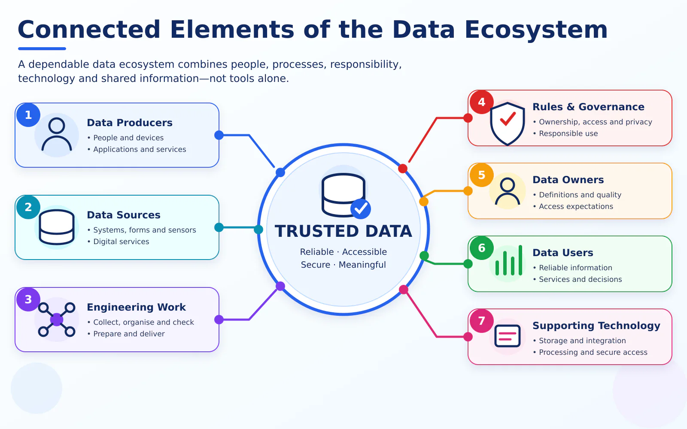

More than tools and databases
A useful data ecosystem depends on cooperation. Each element affects the reliability and value of the final information.

Elements of the ecosystem
Data producers
People, applications, organisational activities and devices create data.
Data sources
Records originate from operational systems, documents, forms and digital services.
Data engineering work
Information is collected, organised, checked, prepared and made available.
Rules and responsibilities
Organisations determine ownership, permitted access, protection and appropriate use.
Data users
Staff, managers, analysts, researchers and applications use the prepared information.
Key idea: An ecosystem succeeds when its elements work together. A powerful technology cannot compensate for unclear responsibility or untrustworthy data.
Data journey versus data ecosystem
Data journey
Explains how information moves from generation to use.
- Focuses on stages and movement.
- Answers: What happens to the data?
Data ecosystem
Explains the connected environment that makes data useful.
- Focuses on people, processes, rules and technology.
- Answers: Who and what make the data useful?